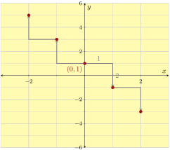
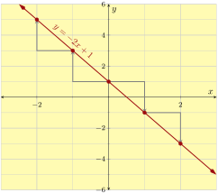
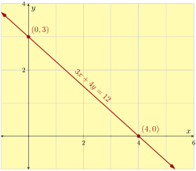
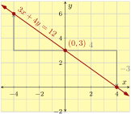
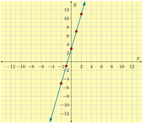
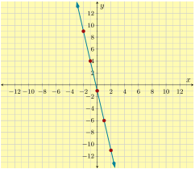

We use points from the table to graph the equation. First, plot each point carefully. Then, connect the points with a smooth curve. Here, the curve is a straight line. Lastly, we can communicate that the graph extends further by sketching arrows on both ends of the line.

(a)Use points from the table

(b)Connect the points in whatever pattern is apparent
Figure3.10.5.Graphing the Equation \(y=-2x+5\)
Subsection3.10.3Exploring Two-Variable Data and Rate of Change
In Section 3 we covered how to find patterns in tables of data and how to calculate the rate of change between points in data.
Example3.10.6.
Write an equation in the form \(y=\ldots\) suggested by the pattern in the table.
We consider how the values change from one row to the next. From row to row, the \(x\)-value increases by \(1\text{.}\) Also, the \(y\)-value decreases by \(2\) from row to row.
\(x\)
\(y\)
\(0\)
\(-4\)
\({}+1\rightarrow\)
\(1\)
\(-6\)
\(\leftarrow{}-2\)
\({}+1\rightarrow\)
\(2\)
\(-8\)
\(\leftarrow{}-2\)
\({}+1\rightarrow\)
\(3\)
\(-10\)
\(\leftarrow{}-2\)
Since row-to-row change is always \(1\) for \(x\) and is always \(-2\) for \(y\text{,}\) the rate of change from one row to another row is always the same: \(-2\) units of \(y\) for every \(1\) unit of \(x\text{.}\)
We know that the output for \(x = 0\) is \(y = -4\text{.}\) And our observation about the constant rate of change tells us that if we increase the input by \(x\) units from \(0\text{,}\) the output should decrease by \(\overbrace{(-2)+(-2)+\cdots+(-2)}^{x\text{ times}}\text{,}\) which is \(-2x\text{.}\) So the output would be \(-4-2x\text{.}\)
So the equation is \(y=-2x-4\text{.}\)
Subsection3.10.4Slope
In Section 4 we covered the definition of slope and how to use slope triangles to calculate slope. There is also the slope formula which helps find the slope through any two points.
Example3.10.8.
Find the slope of the line in the following graph.
In Section 5 we covered the definition of slope intercept-form and both wrote equations in slope-intercept form and graphed lines given in slope-intercept form.
(a)First, plot the line’s \(y\)-intercept, \((0,4)\text{.}\)

(b)The slope is \(-\frac{5}{2}=\frac{-5}{2}=\frac{5}{-2}\text{.}\) So we can try using a “run” of \(2\) and a “rise” of \(-5\) or a “run” of \(-2\) and a “rise” of \(5\text{.}\)

(c)Arrowheads and labels are encouraged.
Figure3.10.13.Graphing \(y=-\frac{5}{2}x+4\)
Writing a Line’s Equation in Slope-Intercept Form Based on Graph.
Given a line’s graph, we can identify its \(y\)-intercept, and then find its slope using a slope triangle. With a line’s slope and \(y\)-intercept, we can write its equation in the form of \(y=mx+b\text{.}\)
Figure3.10.16.Identify the line’s \(y\)-intercept, \(10\text{.}\)

Figure3.10.17.Identify the line’s slope using a slope triangle. Note that we can pick any two points on the line to create a slope triangle. We would get the same slope: \(-\frac{2}{3}\)
With the line’s slope \(-\frac{2}{3}\) and \(y\)-intercept \(10\text{,}\) we can write the line’s equation in slope-intercept form: \(y=-\frac{2}{3}x+10\text{.}\)
Subsection3.10.6Point-Slope Form
In Section 6 we covered the definition of point-slope form and both wrote equations in point-slope form and graphed lines given in point-slope form.
Example3.10.18.
A line passes through \((-6,0)\) and \((9,-10)\text{.}\) Find this line’s equation in point-slope form. .
We will use the slope formula to find the slope first. After labeling those two points as \((\overset{x_1}{-6},\overset{y_1}{0}) \text{ and } (\overset{x_2}{9},\overset{y_2}{-10})\text{,}\) we have:
Now the point-slope equation looks like \(y=-\frac{2}{3}(x-x_0)+y_0\text{.}\) Next, we will use \((9,-10)\) and substitute \(x_0\) with \(9\) and \(y_0\) with \(-10\text{,}\) and we have:
In Section 7 we covered the definition of standard form of a linear equation. We converted equations from standard form to slope-intercept form and vice versa. We also graphed lines from standard form by finding the intercepts of the line.
The line’s equation in standard form is \(4x+7y=-21\text{.}\)
To graph a line in standard form, we could first change it to slope-intercept form, and then graph the line by its \(y\)-intercept and slope triangles. A second method is to graph the line by its \(x\)-intercept and \(y\)-intercept.
Example3.10.20.
Graph \(2x-3y=-6\) using its intercepts. And then use the intercepts to calculate the line’s slope.
So the line’s \(y\)-intercept is \((0,2)\text{.}\)
With both intercepts’ coordinates, we can graph the line:

Figure3.10.21.Graph of \(2x-3y=-6\)
Now that we have graphed the line we can read the slope. The rise is \(2\) units and the run is \(3\) units so the slope is \(\frac{2}{3}\text{.}\)
Subsection3.10.8Horizontal, Vertical, Parallel, and Perpendicular Lines
In Section 8 we studied horizontal and vertical lines. We also covered the relationships between the slopes of parallel and perpendicular lines.
Example3.10.22.
Line \(m\)’s equation is \(y=-2x+20\text{.}\) Line \(n\) is parallel to \(m\text{,}\) and line \(n\) also passes the point \((4,-3)\text{.}\) Find an equation for line \(n\) in point-slope form.
Since parallel lines have the same slope, line \(n\)’s slope is also \(-2\text{.}\) Since line \(n\) also passes the point \((4,-3)\text{,}\) we can write line \(n\)’s equation in point-slope form:
Two lines are perpendicular if and only if the product of their slopes is \(-1\text{.}\)
Example3.10.23.
Line \(m\)’s equation is \(y=-2x+20\text{.}\) Line \(n\) is perpendicular to \(m\text{,}\) and line \(q\) also passes the point \((4,-3)\text{.}\) Find an equation for line \(q\) in slope-intercept form.
Since line \(m\) and \(q\) are perpendicular, the product of their slopes is \(-1\text{.}\) Because line \(m\)’s slope is given as \(-2\text{,}\) we can find line \(q\)’s slope is \(\frac{1}{2}\text{.}\)
Since line \(q\) also passes the point \((4,-3)\text{,}\) we can write line \(q\)’s equation in point-slope form:
Sketch the points \((8,2)\text{,}\)\((5,5)\text{,}\)\((-3,0)\text{,}\)\(\left(0,-\frac{14}{3}\right)\text{,}\)\((3,-2.5)\text{,}\) and \((-5,7)\) on a Cartesian plane.
Scientists are conducting an experiment with a gas in a sealed container. The mass of the gas is measured, and the scientists realize that the gas is leaking over time in a linear way. Each minute, they lose \(5.6\) grams. Seven minutes since the experiment started, the remaining gas had a mass of \(240.8\) grams.
Let \(x\) be the number of minutes that have passed since the experiment started, and let \(y\) be the mass of the gas in grams at that moment. Use a linear equation to model the weight of the gas over time.
This line’s slope-intercept equation is .
\(34\) minutes after the experiment started, there would be grams of gas left.
If a linear model continues to be accurate, minutes since the experiment started, all gas in the container will be gone.
Scientists are conducting an experiment with a gas in a sealed container. The mass of the gas is measured, and the scientists realize that the gas is leaking over time in a linear way. Each minute, they lose \(2.5\) grams. Ten minutes since the experiment started, the remaining gas had a mass of \(75\) grams.
Let \(x\) be the number of minutes that have passed since the experiment started, and let \(y\) be the mass of the gas in grams at that moment. Use a linear equation to model the weight of the gas over time.
This line’s slope-intercept equation is .
\(33\) minutes after the experiment started, there would be grams of gas left.
If a linear model continues to be accurate, minutes since the experiment started, all gas in the container will be gone.
Find the \(y\)-intercept and \(x\)-intercept of the line given by the equation. If a particular intercept does not exist, enter none into all the answer blanks for that row.
\begin{equation*}
2 x + 7 y = -14
\end{equation*}
\(x\)-value
\(y\)-value
Location (as an ordered pair)
\(y\)-intercept
\(x\)-intercept
\(x\)-intercept and \(y\)-intercept of the line \(2 x+7 y=-14\)
Find the \(y\)-intercept and \(x\)-intercept of the line given by the equation. If a particular intercept does not exist, enter none into all the answer blanks for that row.
\begin{equation*}
4 x + 5 y = -60
\end{equation*}
\(x\)-value
\(y\)-value
Location (as an ordered pair)
\(y\)-intercept
\(x\)-intercept
\(x\)-intercept and \(y\)-intercept of the line \(4 x+5 y=-60\)